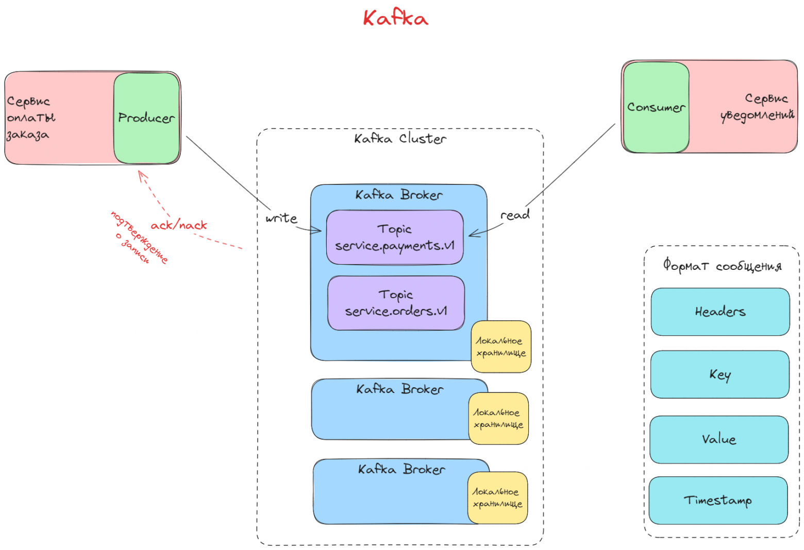

Асинхронная интеграция через Kafka и RabbitMQ: построение отказоустойчивых потоков данных между сервисами платформы
Данная тема посвящена изучению механизмов асинхронной интеграции в микросервисной архитектуре с использованием систем обмена сообщениями Apache Kafka и RabbitMQ. В рамках изучения рассматриваются принципы построения надёжных и отказоустойчивых потоков данных между различными сервисами платформы, а также методы обеспечения целостности и надёжности передачи информации.

Ключевые технологические компоненты
- Apache Kafka — распределённая платформа для потоковой обработки данных
- RabbitMQ — брокер сообщений для надёжной передачи данных
- Микросервисная архитектура — подход к разработке приложений
Терминологический словарь
- Брокер сообщений
- Промежуточное программное обеспечение для надёжной передачи сообщений между компонентами системы
- Топик
- Логический канал для публикации и подписки на сообщения в Kafka
- Очередь сообщений
- Структура данных для хранения и передачи сообщений между компонентами системы
- Паттерн pub/sub
- Шаблон проектирования, где отправитель (publisher) публикует сообщения, а получатели (subscribers) их подписываются
Направления развития темы
- Архитектурный контекст
- Интеграция с существующими системами
- Масштабирование решений
- Обеспечение отказоустойчивости
- Технологический стек
- Apache Kafka
- RabbitMQ
- Промежуточное ПО
- Привязка к деятельности РТК ИТ
- Разработка внутренних решений
- Интеграция с внешними сервисами
- Создание отказоустойчивых систем